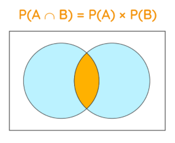

Introduction¶
Add some introduction about Reinforcement Learning here. @Naresh Kumar Devulapally The language of this course is going to be probability. Everything we discuss in this course will be based on undergraduate level probability.
Question
We have two probability distributions \(P(A,B)\) and \(P(A|B)\). What do we call these distributions?
Answer
\(P(A,B)\) (also denoted as \(P(A,B)\) is called Joint Probability. Joint Probability is a statistical measure that calculates the likelihood of two events occuring together and at the same point in time.
Joint probability is a measure of two events happening at the same time, and can only be applied to situations where more than one observation can occur at the same time. For example, from a deck of \(52\) cards, the joint probability of picking up a card that is both red and \(6\) is \(P(6 ∩ red) = 2/52 = 1/26\), since a deck of cards has two red sixes—the six of hearts and the six of diamonds. Because the events “\(6\)” and “red” are independent in this example, you can also use the following formula to calculate the joint probability:
Joint probability should not be confused with conditional probability (denoted by \(P(A|B)\)), which is the probability that one event will happen given that another action or event happens.
Question
Given the probability distribution, \(P(X,Y)\), how to find \(P(X)\)? What is process called? What is \(P(X)\) called in this context?
Answer
This process is called Marginalization and \(P(X)\) is called Marginal Distribution
Marginalization in probability refers to “summing out” the probability of a random variable \(X\) given the joint probability distribution of \(X\) with other variable(s). It is a direct application of the law of total probability.
For instance, let’s say that you want to compute \(P(X=x)\), but you are not given a direct probability distribution over \(X\) from which you can read this value. You are instead given a joint probability distribution over \(X\) and some other random variable(s) \(Y\). Well, in that case you can just do:
That is, to find \(P(X=x)\), we sum all the probability values where \(X=x\) occurs with all possible values of \(Y\).
We can find how often \(X=x\) occurs if we consider how often \(X=x\) occurs with each individual value of \(Y\), and sum up all such values to get the total value of the often-ness of \(X\).
Question
What is \(E(X)\) in probability? How to find \(E(X)\)?
Answer
\(E(X)\) is called Expected Value. It is given by the equation:
Question
What is \(E[X|Y]\) and \(E[X|Y=y]\) in probability? What is the difference between them?
Answer
Suppose that \(X\) and \(Y\) are two random variables. Let \(y_0\) be a fixed real number, say \(y_0 = 1\). Then \(E[X|Y=y_0]=E[X|Y=1]\) is a real number: it is the conditional expected value of \(X\) given that \(Y\) has value \(1\). Now, note for some other fixed real number, \(y_1\), say \(y_1=1.5\), \(E[X|Y=y_0]=E[X|Y=1.5]\) would be the conditional expected value of \(X\) given \(Y=1.5\) (a real number). There is no reason to suppose that \(E[X|Y=1.5]\) and \(E[X|Y=1]\) have the same value. Thus, we can regard \(E[X|Y=y]\) as being a real-valued function \(g(y)\) that maps real numbers \(y\) to real numbers \(E[X|Y=y]\). \(E[X|Y=y]\) is a real-valued function of \(y\).
On the other hand, \(E[X|Y]\) is a random variable \(Z\) which happens to be a function of the random variable \(Y\). Now, whenever we write \(Z=h(Y)\), this means that when variable \(Y\) takes value \(y\), the random variable \(Z\) takes value, \(h(Y)\), i.e., the \(Z=E[X|Y]\) takes value \(E[X|Y=y]=g(y)\). Thus, \(E[X|Y]\) is a function of \(Y\).
As a simple illustrative example, suppose that \(X\) and \(Y\) are discrete random variables with joint distributions:
Note that, \(X\) and \(Y\) are dependent Bernoulli random variables with expected values \(0.7\) and \(0.6\) respectively, and so \(E[X]=0.7\) and \(E[Y]=0.6\). Now:
and similarly, \(P(X=1|Y=1)\) and \(P(X=0|Y=1)\). Hence, we have that,
Thus, \(E[X|Y=y] = g(y)\) where \(g(y)\) is a real-valued function, that has the property,
On the other hand, \(E[X|Y]=g(Y)\) is a random variable that takes on values \(3/4\) and \(2/3\) with probabilities \(0.4 = P(Y=0), \enspace 0.6=P(Y=1)\) respectively. Note that \(E[X|Y]\) is a discrete random variable and not a Bernoulli random variable.
Finally,
Question
IF we draw samples from \(P(X)\), how can we estimate \(E(X)\)?
Answer
We take that arithmetic mean of the samples drawn from \(P(X)\). This mean is called sample mean. This is an example of Monte Carlo
Question
Given \(P(x|y), \enspace P(y)\), how can we find \(P(y|x)\)?
Answer
Bayes rule: